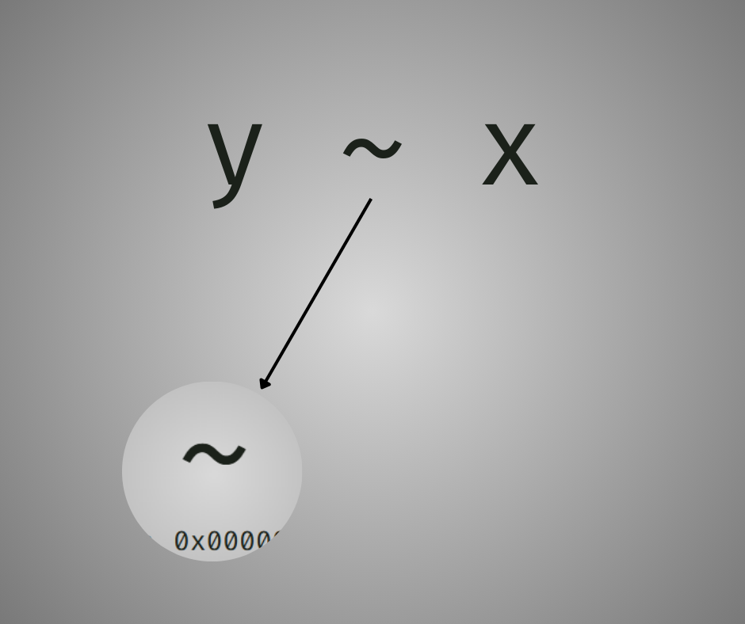

f = y ~ x
class(f)[1] "formula"
If you’ve used R for any statistical modeling, I am certainly sure you’ve encountered formulas, like, by a lot.
However, what if I told you they’re generally everywhere? For example:
Linear model lm(y ~ x)
ggplot2’s facet_grid() and formula from geom_smooth():
mtcars |>
ggplot(aes(wt, mpg, color = factor(cyl))) +
geom_point(size = 3, alpha = 0.7) +
theme_minimal(base_size = 12) +
# You can modify the existing formula
geom_smooth(
method = "lm",
formula = y ~ log(x),
se = TRUE,
alpha = 0.2,
linewidth = 1
) +
# Facet grid accepts formula for rows and cols as an argument
facet_grid(~ cyl) +
scale_color_manual(
values = c("4" = "#2E86AB", "6" = "#A23B72", "8" = "#F18F01"),
name = "Cylinders"
)Machine learning with tidymodels’s recipes API, e.g.:
df |>
recipe(y ~ x1 + x2 + x3) |>
step_normalize(all_numeric_predictors()) |>
step_corr(all_predictors(), threshold = 0.9)The application is not limited to statistical modelling per se, where it describes the relationship between the variables, whereas the left hand side is the dependent variable, while the right hand side is the independent variable, for example. Also, have you ever wondered what makes them tick?
Formula ~ in R is just another tool, most particular in metaprogramming, where it captures expressions in runtime without evaluating them.
Can we dive deep into what makes formulas special and how you can leverage them in your own code?
At their core, formulas are R objects created with the ~ operator. They look simple:
f = y ~ x
class(f)[1] "formula"But there’s more than meets the eye. A formula is actually a call object that stores unevaluated expressions along with their environment.
A formula typically has three parts:
~
Example 1 contains both LHS and RHS:
f1 = y ~ x + z
f1[[1]] `~`f1[[2]] yf1[[3]] x + zExample 2 contains RHS but LHS:
f2 = ~ x + z
f2[[1]] `~`f2[[2]] x + zIt is okay to not have LHS, only RHS. It is definitely not okay to have LHS but RHS.
Let me clarify something upfront: formulas in R don’t have a rigid, predefined meaning.
What I mean is this:
~ operator doesn’t enforce any particular semantics; it just captures structure. What that structure means entirely depends on how you choose to interpret it.In short: The formulas in R actually lean on what you exactly do it.
You can really do anything. For instance:
transform_data = function(data, ...) {
box::use(
rlang[f_lhs, f_rhs, enexprs, eval_tidy],
purrr[reduce],
tibble[tbl = as_tibble]
)
dots = enexprs(...)
new_data = reduce(dots, function(df, expr) {
col_name = as.character(f_lhs(expr))
operation = f_rhs(expr)
df[[col_name]] = eval_tidy(operation, data = df)
df
}, .init = data)
tbl(new_data)
}
iris |>
transform_data(
petal_ratio ~ Petal.Length / Petal.Width,
pr_2 ~ petal_ratio^2,
Species ~ as.integer(Species)
)# A tibble: 150 × 7
Sepal.Length Sepal.Width Petal.Length Petal.Width Species petal_ratio pr_2
<dbl> <dbl> <dbl> <dbl> <int> <dbl> <dbl>
1 5.1 3.5 1.4 0.2 1 7 49
2 4.9 3 1.4 0.2 1 7 49
3 4.7 3.2 1.3 0.2 1 6.5 42.2
4 4.6 3.1 1.5 0.2 1 7.5 56.2
5 5 3.6 1.4 0.2 1 7 49
6 5.4 3.9 1.7 0.4 1 4.25 18.1
7 4.6 3.4 1.4 0.3 1 4.67 21.8
8 5 3.4 1.5 0.2 1 7.5 56.2
9 4.4 2.9 1.4 0.2 1 7 49
10 4.9 3.1 1.5 0.1 1 15 225
# ℹ 140 more rowsIn this example, I’m treating ~ like an assignment operator — the left side becomes the column name, and the right side defines the computation. This is completely different from the statistical modeling interpretation where formulas express variable relationships.
In tidyversetakes yet another approach, using formulas as anonymous function shorthand:
purrr::map_int(1:10, ~ .x^2) [1] 1 4 9 16 25 36 49 64 81 100Here’s another example — a function that uses formulas to define probability distributions, assigning them directly into your environment:
define_rv = function(...) {
box::use(
rlang[f_rhs, f_lhs, enexprs, env, caller_env, as_string],
purrr[walk]
)
dots = enexprs(...)
distributions = env(
normal = function(mu, sigma) {
list(
density = \(x) dnorm(x, mean = mu, sd = sigma),
cdf = \(x) pnorm(x, mean = mu, sd = sigma),
quantile = \(x) qnorm(x, mean = mu, sd = sigma),
generate = \(x) rnorm(x, mean = mu, sd = sigma)
)
},
uniform = function(min, max) {
list(
density = \(x) dunif(x, min = min, max = max),
cdf = \(x) punif(x, min = min, max = max),
quantile = \(x) qunif(x, min = min, max = max),
generate = \(x) runif(x, min = min, max = max)
)
}
)
target_env = caller_env()
walk(dots, \(f) {
var = as_string(f_lhs(f))
dist = f_rhs(f)
rv_object = eval(dist, envir = distributions)
assign(var, rv_object, pos = target_env)
})
}Let’s give it a try:
box::use(
ggplot2[
ggplot, aes, theme_minimal, theme, geom_point,
element_text, element_blank, element_line, labs
]
)
define_rv(
x ~ normal(0, 1),
y ~ uniform(0, 1)
)
set.seed(123)
ggplot() +
aes(x$generate(100), y$generate(100)) +
geom_point(color = "#F5AFAF", size = 3) +
theme_minimal(base_size = 20) +
labs(
x = "Normally distributed",
y = "Uniformly distributed",
title = "Try visualizing it",
subtitle = "Generate up to 100 samples"
) +
theme(
plot.title = element_text(color = "grey40", face = "bold", size = 15),
plot.subtitle = element_text(color = "grey40", size = 13),
panel.grid.minor = element_blank(),
panel.grid.major = element_line(color = "grey90", linewidth = 0.3),
axis.title = element_text(face = "bold"),
axis.text = element_text(color = "grey30", size = 8),
axis.title.x = element_text(color = "grey30", size = 12),
axis.title.y = element_text(color = "grey30", size = 12)
)
That’s how vague the true definition of the formula is.
Like I said in the intro, formula ~ in R is just another tool, without an exact meaning. In my application you see, it is most particular in metaprogramming, where it captures expressions without or before evaluating them.
Back in 2017, the rlang package arrived with an ambitious goal: refine and modernize base R’s metaprogramming tools. One of its key innovations — quosures — draws direct inspiration from R’s formula system.
The formulas themselves are, in fact, objects, which means you can extract and manipulate the expressions they contain. But they also carry something “hidden”: their environment. This dual nature: code plus context, is exactly what inspired quosures in rlang.
f = y ~ x + z
environment(f)
#>> <environment: R_GlobalEnv>You can even set a custom environment:
f_custom = y ~ x
environment(f_custom) = rlang::env(x = 10, y = 20)
environment(f_custom)
#>> <environment: 0x000001db174bd0b0>Unless needed, don’t try this in your applications
Environment capture enables delayed evaluation. When you create a formula inside a function, it retains a snapshot of where it was born:
create_formula = function(multiplier) {
~ .x * multiplier
}
f_mult = create_formula(5)
environment(f_mult)$multiplier # The formula remembers!
#>> [1] 5The
environment(f_mult)$multiplieractually remembers!
Both formulas and quosures are language objects at their core, but they differ in their class structure:
class(y ~ x)
#>> [1] "formula"Meanwhile, quo() returns an object with dual inheritance — it’s both a quosure and a formula:
Quosures build on formulas by adding better introspection tools, cleaner printing, and support for quasiquotation (the ability to selectively evaluate parts of an expression).
I can explain each commented lines:
rlang::quo_get_expr().rlang::quo_get_env().value.There’s some noted difference between quo() and enquo() when capturing expressions.
quo() takes the quosure of the expression you write.enquo() takes the quosure of the expression taken by the user input.Both are still quosures and inspired by formulas in R, as they return both the same classes.
Now, the distinction between using raw formulas (~) and enquo() is subtle but important when building functions that accept user expressions.
For instance:
Using ~ captures literally in the current scope
my_formula = function(x) {
f = ~ x
f
}
my_formula(a + b)
#>> ~x
#>> <environment: 0x000001db15d5db20>rlang::enquo() captures what the caller passed
my_enquo = function(x) {
rlang::enquo(x)
}
my_enquo(a + b)
#>> <quosure>
#>> expr: ^a + b
#>> env: globalquo() and enquo()
Use enquo() when building functions that accept user-supplied names or expressions. Use quo() when you’re programmatically constructing expressions yourself.
Python has an attempt on emulating formulas in R, done by some libraries like {statsmodels}, but failed miserably due to Python’s limitation. The core issue is because Python evaluates expressions eagerly, while R formulas require lazy evaluation
So to approximate (not really even close) R’s formula interface, they had to use strings, which itself is a bad solution.
import statsmodels.formula.api as smf
model = smf.ols('y ~ x + I(x**2)', data=df).fit()Julia has an actual R’s formula interface, but there are some slight differences
using GLM
lm(@formula(y ~ x + x^2), data = df)The formulas API in R is one of the reasons why some languages cannot fully integrated into other programming languages. The tight integration of:
creates a unique programming model that’s hard to transplant. This is both R’s greatest strength in statistical computing.